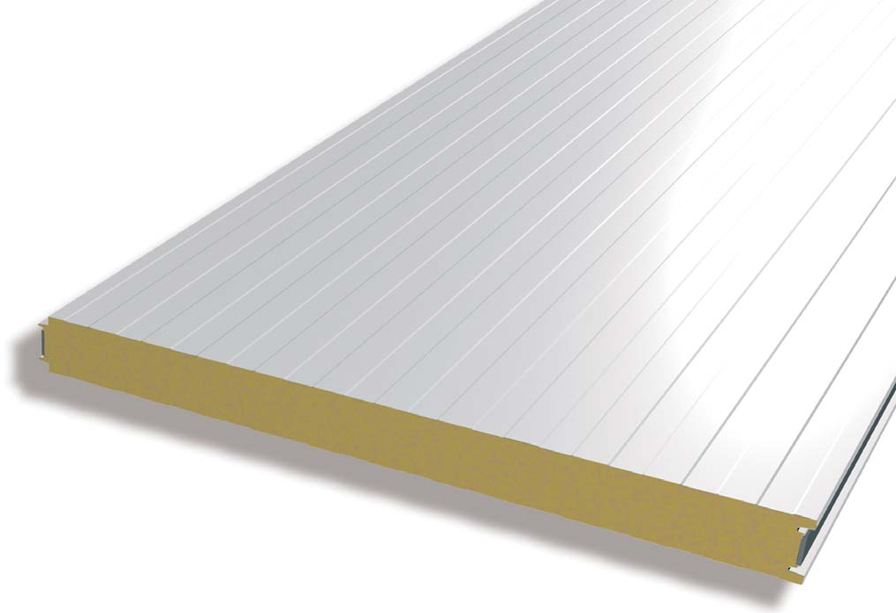
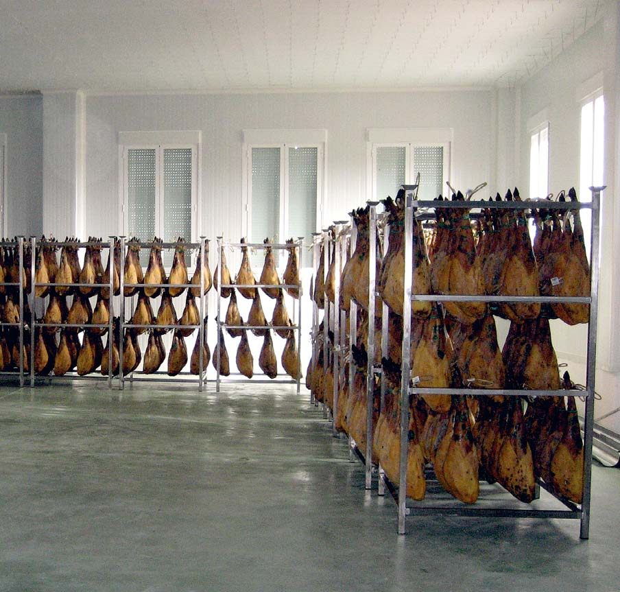
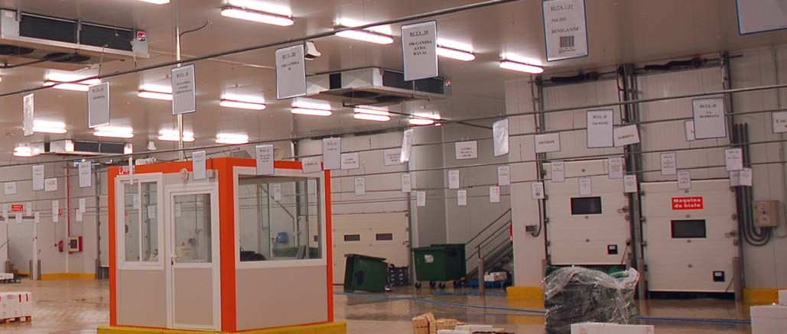
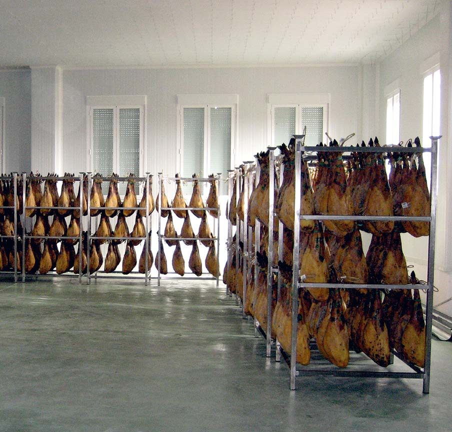
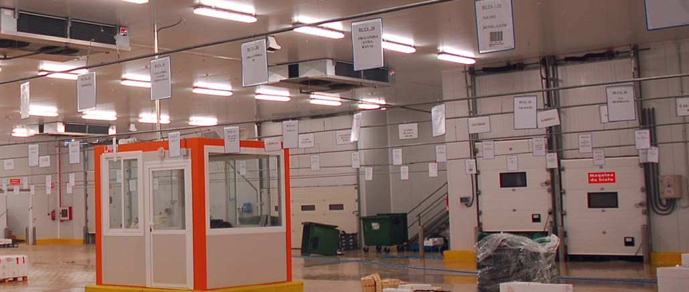
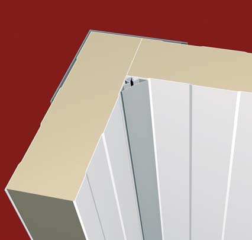
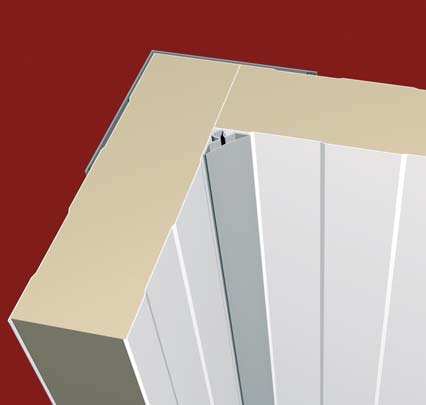

Panel Frigorífico
Introducción:
El presente siglo XXI propone un mundo sin fronteras, inmerso en una atmósfera de innovación, la investigación científica orientada en busca de materiales revolucionarios y sus aplicaciones que cubran necesidades existentes, o de nueva creación. Pero al mismo tiempo cobran importancia el valor de la ecología, de la sostenibilidad y de ésta, la concienciación de ahorro energético, de preocupación por la capa de ozono y el efecto invernadero. Luego de la firma de los protocolos de Kioto y Montreal la preocupación cobró carácter de normativa internacional. Pero es esta misma globalización la que permite disponer diariamente en nuestro mercado de alimentos frescos procedentes de los cinco continentes. Lo que hace una década era un producto exótico es hoy en día alimento cotidiano. La industria agroalimentaria no es ajena a tal evolución, y siendo la alimentación la necesidad básica del ser humano, la innovación, y las normativas y exigencias aplicadas a este sector, a nivel nacional y europeo son las más estrictas y específicas que podamos encontrar a nivel mundial. Las instalaciones deben estar formadas por materiales fáciles de limpiar, resistentes química y mecánicamente, con alto poder aislante que minimice las aportaciones de energía, para cumplir las exigencias legislativas a nivel industrial, sanitario y alimentario. Hiansa Panel, S.A. posee una completa gama de panel frigorífico para atender todo el rango de necesidades y transformación de los alimentos, su conservación en temperatura o atmósfera controladas, su congelación y posterior mantenimiento, desde la pasteurización a su liofilizado, gracias a las soluciones técnicas desarrolladas en nuestro materiales, selección de maderas primas, cuidado proceso de producción y exigente control de calidad y servicio en nuestros productos terminados.
El fundamento de un panel frigorífico radica en la obtención de una unidad de montaje con gran capacidad de aislamiento térmico, que sea mecánicamente robusta, y dimensionalmente muy estable en el tiempo. El núcleo del panel está formado por espuma rígida de poliuretano inyectado, el mejor aislante térmico conocido, mientras que las caras externas son de acero conformado que proporciona al conjunto una extraordinaria resistencia mecánica. La adherencia entre ambos elementos confieren al panel una mayor cualidad frente a la flexión y el pandeo, potenciada por el nervado del acero. Pero además como la industria alimentaria demanda, el panel frigorífico debe ser un material estanco frente al vapor de agua, y resistente a determinados ambientes agresivos, como la salinidad y la presencia de diversos ácidos añadidos a la humedad. El acero proporciona una barrera de vapor continua del material en ambas caras, los tratamientos de galvanizado recibidos evitan la oxidación del material y la correcta elección de los acabados de cobertura protegen frente a la humedad y los ácidos. Mediante el ensamblaje de estos paneles puede obtenerse cualquier configuración de una industria agroalimentaria.
Funciones y ventajas del panel frigorífico:
- • Su altísima capacidad de aislamiento proporciona un gran ahorro económico durante toda la vida de la instalación.
- • La resistencia mecánica permite que las instalaciones sean autoportantes, sin utilizar apoyos en la estructura principal del edificio, facilitando la labor del proyectista y del calculista, lo que supone un considerable ahorro económico en la inversión inicial.
- • Su estabilidad dimensional les hace ideales para control de los parámetros de entorno, temperatura, presión, humedad y composición.
- • Su acabado superficial liso, sin poros o irregularidades que evitan la acumulación de suciedad y evitan la proliferación de organismos.
- • Los paneles son muy fáciles de limpiar.
- • Se presenta ya terminado en las instalaciones, sin necesidad de adicionar materias primas u otros componentes, lo que facilita la organización del proyecto.
- • Los paneles son muy ligeros, y por lo tanto fáciles de manipular y montar.
- • Fabricación a medida, sin desperdicio no ocasionando costes adicionales.
- • Desmontables, permitiendo su reubicación, facilitando la reforma, ampliación, incluso el traslado parcial o total de la instalación.
- • Sencillez de corte y sellado, permiten la apertura de huecos para accesos, canalizaciones y maquinaria.
- • Su resistencia mecánica permite su empleo como substrato de instalaciones de iluminación y canalizaciones, pudiéndose emplear como pasillos técnicos transitables para tareas de mantenimiento.
- • La versatilidad de uso y altas prestaciones les hace adecuados para todo tipo de instalación industrial incluyendo oficinas, falsos techos, laboratorios, etc.
Características:
- • Definidos por su espesor nominal lo que capacita al panel para su uso en diferentes temperaturas, conservación, congelación o ultracongelación. Aumentando el espesor disminuimos el coeficiente de transmisión de calor que caracteriza al panel.
- • El tipo de nervado y el espesor del acero empleado determina la longitud máxima de empleo del panel según su disposición vertical u horizontal.
- • El color del material influye en la luminosidad de las instalaciones, caracterizado por la reflectancia, y determina la temperatura superficial máxima del panel.
- • La elección de la espuma define el comportamiento al fuego del panel.
- • El diseño de la junta proporciona la estanqueidad del conjunto, y modifica comportamiento al fuego del conjunto.
- • La elección del acabado determina los valores de humedad, salinidad, concentración y tipo de ácidos máximos en lo que la instalación puede trabajar de forma idónea. Por ello en el diseño del acabado debe tenerse en cuenta el tipo de productos que van a manipularse y almacenarse, y de la atmósfera que generan.
- • Hiansa Panel S.A. ha sometido sus paneles frigoríficos a una exhaustiva serie de ensayos en el prestigiosos laboratorio Afiti Licof de Toledo, donde ha obtenido las correspondientes clasificaciones según las Normas Españolas y Europeas EN 14509, UNE 23727, UNE En 13501.
| Especificaciones técnicas panel frigorífico hiansa | |||||||||
|---|---|---|---|---|---|---|---|---|---|
| Parámetros | Rango disponible | ||||||||
| Longitud (m) | < 16 | ||||||||
| Ancho (mm) | 1.100 | ||||||||
| Espesor | 60 | 80 | 100 | 120 | 140 | 160 | 180 | 200 | |
| Núcleo | PIR | PUR | |||||||
| Chapa espesor (mm) | 0,5 | 0,6 | Consultar | ||||||
| Colores | B1006 | Consultar | |||||||
| Recubrimiento | Lacado | DS 35 | HDX 60 | Consultar | |||||
| Perfilado | Grecado | Liso | |||||||
| Reacción al fuego | M1 | B-s2, d0 | |||||||
| Espesor (mm) | 60 | 80 | 100 | 120 | 140 | 160 | 180 | 200 | |
| Coeficiente de transmisión térmica (K) | kcal/h m2 °C | 0.270 | 0.200 | 0.160 | 0.130 | 0.120 | 0.100 | 0.090 | 0.080 |
| W/m2 °C | 0.318 | 0.241 | 0.194 | 0.162 | 0.140 | 0.122 | 0.109 | 0.090 | |
Formación del núcleo de espuma:
El núcleo aislante, que está formado por espuma de poliuretano (PUR) o de poliisocianurato (PIR), evita el intercambio energético entre los 2 ambientes que separan. La mezcla de 2 sustancias líquidas Isocianato y Poliol provoca una reacción exotérmica formando poliuretano, una red espacial de celdillas, el calor cedido evapora un tercer componente, el pentano, que rellena las celdas con este gas de muy baja conductividad. Su curado en una prensa de 43 metros proporciona un núcleo isótropo y homogéneo que evita las condensaciones intersticiales. El pequeño diámetro de las celdas hace que sólo haya transmisión de calor mediante conducción y radiación en el interior del núcleo, no existiendo convección entre el gas y las paredes de las celdas, por esta razón y por la baja conductividad del pentano, el panel de poliuretano así obtenido es el mejor aislante térmico conocido.
Fabricación del panel frigorífico:
Se trata de obtener unidades de montaje, de muy baja conductividad y gran resistencia mecánica. Para ello se perfila el acero, y se somete a procesos que mejoran la adherencia del núcleo, como el efecto corona y el precalentamiento del acero. En una cabina de parámetros controlados se realiza la inyección del núcleo e inmediatamente se cura en prensa. Al finalizar el curado se realiza el enfriamiento progresivo y regulado del panel. proceso previo a su embalaje.
| Peso del panel frigorífico hiansa | |||||||||
|---|---|---|---|---|---|---|---|---|---|
| Kg/m2 espesor | 0,5/0,5 | 11,32 | 12,12 | 12,92 | 13,72 | 14,52 | 15,32 | 16,12 | 16,92 |
| espesor chapa | 0,5/0,6 | 12,21 | 13,01 | 13,81 | 14,61 | 15,41 | 16,21 | 17,01 | 17,81 |
| cara A / cara B | 0,6/0,6 | 13,10 | 13,90 | 14,70 | 15,50 | 16,30 | 17,10 | 17,90 | 18,70 |
| Kg/m lineal | 0,5/0,5 | 12,45 | 13,33 | 14,21 | 15,09 | 15,97 | 16,85 | 17,73 | 18,61 |
| espesor chapa | 0,5/0,6 | 13,43 | 14,31 | 15,19 | 16,07 | 16,95 | 17,83 | 18,71 | 19,59 |
| cara A / cara B | 0,6/0,6 | 14,42 | 15,30 | 16,18 | 17,06 | 17,94 | 18,82 | 19,70 | 10,58 |
Sobrecargas de uso para panel frigorífico (en Kg/m2) 1 vano (2 apoyos)
| Espesor de panel (mm) | Luces (m) | |||||||||||||||
|---|---|---|---|---|---|---|---|---|---|---|---|---|---|---|---|---|
| 3 | 3,5 | 4 | 4,5 | 5 | 5,5 | 6 | 6,5 | 7 | 7,5 | 8 | 8,5 | 9 | 9,5 | 10 | 10,5 | |
| 60 | 198 | 128 | 94 | 64 | 45 | 30 | ||||||||||
| 80 | 281 | 179 | 129 | 93 | 73 | 52 | 28 | |||||||||
| 100 | 331 | 228 | 180 | 150 | 118 | 96 | 78 | 64 | 41 | |||||||
| 120 | 364 | 293 | 230 | 190 | 151 | 120 | 96 | 76 | 63 | 32 | ||||||
| 140 | 380 | 291 | 231 | 184 | 147 | 121 | 99 | 82 | 54 | 34 | ||||||
| 160 | 334 | 268 | 213 | 176 | 147 | 123 | 100 | 83 | 69 | 48 | ||||||
| 180 | 359 | 299 | 240 | 207 | 173 | 146 | 119 | 98 | 82 | 70 | 51 | 27 | ||||
| 200 | 383 | 333 | 227 | 230 | 200 | 170 | 141 | 116 | 98 | 85 | 73 | 63 | 22 | |||
| zona longitudes autoportantes | ||||||||||||||||
sobrecargas de uso para panel frigorífico (en Kg/m2) 2 o más vanos (3 o más apoyos)
| Espesor de panel (mm) | Luces (m) | ||||||||||||
|---|---|---|---|---|---|---|---|---|---|---|---|---|---|
| 2 | 3 | 3,5 | 4 | 4,5 | 5 | 5,5 | 6 | 6,5 | 7 | 7,5 | 8 | 8,5 | |
| 60 | 303 | 216 | 152 | 111 | 90 | 67 | 52 | ||||||
| 80 | 362 | 287 | 223 | 174 | 138 | 105 | 83 | 65 | 54 | ||||
| 100 | 391 | 282 | 210 | 167 | 133 | 108 | 89 | 75 | 63 | 54 | |||
| 120 | 403 | 311 | 271 | 231 | 188 | 153 | 121 | 102 | 83 | 72 | 58 | 51 | |
| 140 | 416 | 334 | 288 | 245 | 202 | 168 | 136 | 116 | 96 | 85-2 | 69 | 59 | |
| 160 | 400 | 341 | 289 | 243 | 208 | 175 | 152 | 131 | 111 | 94 | 81 | ||
| 180 | 439 | 377 | 320 | 270 | 229 | 196 | 169 | 146 | 124 | 108 | 94 | ||
| 200 | 468 | 402 | 344 | 291 | 248 | 211 | 182 | 158 | 142 | 122 | 109 | ||
| zona longitudes autoportantes | |||||||||||||
| Peso del paquete embalado | ||||
|---|---|---|---|---|
| Espesor | N° Panel / bulto | kg / m bulto | kg / m2 bulto | Altura bulto mm |
| 60 | 12 | 148,53 | 122,40 | 800 |
| 80 | 9 | 119,31 | 99,00 | 800 |
| 100 | 7 | 98,95 | 82,60 | 780 |
| 120 | 6 | 90,09 | 75,60 | 800 |
| 140 | 5 | 79,47 | 67,00 | 780 |
| 160 | 4 | 67,09 | 56,80 | 720 |
| 180 | 4 | 70,61 | 60,00 | 800 |
| 200 | 3 | 55,59 | 47,70 | 680 |
 



Montaje de la instalación:
Montaje de la instalación El montaje de una instalación agroalimentaria debe estar presidido por 4 premisas fundamentales:
- • Continuidad del aislamiento
- • Continuidad de la barrera de vapor
- • Rotura de puentes térmicos
- • Higiene de la instalación
Para la descarga y el tránsito en obra de los paquetes de panel deben utilizarse medios mecánicos apropiados operados por personal debidamente cualificado. El peso de un paquete es directamente proporcional a la longitud e inversamente proporcional al espesor de los paneles. Las superficies de apoyo en descarga de los paquetes deben ser regulares, horizontales, resguardados de la lluvia evitándose su exposición solar prolongada.
La planificación debe minimizar el trasiego manual del panel en la obra, disminuyendo así el riesgo de daños en el material.
La extracción de un panel del seno del paquete debe ser realizada verticalmente hasta separarlo completamente del panel sobre el que descansaba, sin arrastrarlo sobre él. Los paneles no son forjados ni estructuras diseñadas para soportar o almacenar productos, su carga máxima admisible depende de su longitud, espesor, tipo de perfilado, grosor del acero, y de los apoyos, su distancias, superficie y número.
Los cortes, esquinas redondeadas y apertura de huecos deben ser realizados en obra. Si fuera necesario practicar un acceso antes de recibir la puerta, se practicará un hueco que permita el paso de una persona, practicando la apertura definitiva al montar la puerta.
Cuando los huecos sean inferiores a 2x2 metros deben instalarse los paneles completos practicándose la apertura al instalar el correspondiente elementos de cierre. La manipulación del panel tiene que efectuarse con las herramientas y el utillaje adecuado así como los equipos de protección necesarios que eviten daños en los materiales y accidentes personales.
Herramientas de corte que calienten excesivamente la superficie del acero y pueda dañar la pintura, no deben emplearse para cortar los paneles.
Para fijar puertas y ventanas en el panel, y para rellenar cualquier hueco practicado en su seno, se recomienda el uso de espuma de poliuretano por sus propiedades de adherencia, debiendo dejarse al menos 1,5 cm para que la espuma expanda correctamente. Las superficies de contacto han de ser humedecidas levemente para mejorar la fijación.
Se rellenarán con espuma de poliuretano las uniones verticales de esquina, los encuentros pared-techo y las cavidades en chinos, omegas y perfiles auxiliares de montaje horizontal.
La junta del panel está diseñada para obtener la mejor unión entre unidades, por lo que no debe ser inyectada con espuma pues no reporta ningún beneficio térmico y puede dificultar el montaje.
El sellado de la junta cuando proceda debe ser realizado mediante la aplicación de siliconas neutras con fungicida.
Los remaches aumentan el contacto superficial con el acero mejorando la unión, siendo apropiados en cámaras donde por depresiones y sobrepresiones las uniones son dinámicas como en las de congelación. Mientras los tornillos autotaladrantes pueden emplearse para la fijación de elementos que requieran un rápido desmontaje.
El film de protección debe retirarse tan pronto estén montados los paneles, su exposición a los diferentes tipos de luz, en especial la solar aumentan las propiedades del adhesivo, lo que pueden dificultar su posterior extracción.
Tipos de remates:
Existen 6 tipos de remates de panel:
- • Remate U de suelo
- • Remate L interior de esquina
- • Remate L exterior de esquina
- • Remate plano tapajuntas
- • Remate Z de cambio de espesor
- • Remate bajo croquis
Fijación de los paneles al suelo:
La unión de un panel frigorífico al suelo puede realizarse:
- 1. En montaje superficial cuando el suelo ya está terminado
- 2. Empotrado sobre el suelo sin aislar
- 3. Empotrado en cámaras de congelación
En todos los casos se utilizará un remate de acero en forma de U, que realizará funciones de guía, facilitando el correcto nivelado del panel, salvando las caídas y corrigiendo los defectos de la solera. Al mismo tiempo sirve de fijación impidiendo el desplazamiento lateral garantizando la continuidad de la barrera de vapor en la base de la instalación.
Uniones de esquina:
La formación de una esquina de dos paneles frigoríficos debe realizarse utilizando dos tipos de remates.
Remate interior L:
Salas con temperatura positiva:
El ángulo interior a debe formarse empleando perfil cóncavo sanitario, en cumplimiento de las leyes sanitarias que exigen la formación de encuentros redondeados.
El perfil sanitario está formado por dos piezas; el soporte, y el cuerpo cóncavo.
El soporte será de aluminio proporcionar resistencia mecánica a la unión. El cuerpo cóncavo será de PVC con labios flexibles en los extremos para evitar huecos en la unión. La longitud será de 4 metros para facilitar su montaje.
 

Cámaras con temperatura negativa:
El ángulo interior a debe unirse empleando un remate L interior con un ángulo de 0 < a < 180. Las alas de este remate deben ser simétricas con una longitud inferior a 75 mm, pues mayor superficie no aumentará la resistencia del conjunto y proporcionará un aspecto poco estético. Los cantos del remate deben estar plegados hacia dentro al menos 15 mm para aumentar la rigidez del conjunto.
Remate exterior:
El ángulo exterior a será formado por un remate L exterior con un ángulo 180 < a < 360. El remate suele tener las alas asimétricas, estando el lado corto fijado al canto de un panel, mientras que el lado más largo ocultará la espuma del panel de encuentro, al cual se fijará. El remate será de acero lacado blanco de 0,6 mm de espesor, con ambos cantos plegados al menos 15 mm, y con longitudes inferiores a 6 metros para facilitar su manipulación.
Fijación de paredes y techos:
Puesto que los paneles que forman los techos son de análogas características a los que forman las paredes, las uniones que se producen entre ambos son exactamente iguales a las analizadas en el apartado anterior.
Sustentación de techos:
Los paneles frigoríficos se diseñan para emplearse como techo de cámaras apoyándose sobre las paredes exteriores y lo tabiques de separación de salas, siempre que cumplan medidas “autoportantes”.
Cuando las dimensiones de la cámara excedan estas medidas, deben emplearse elementos auxiliares para la suspensión de los paneles. Para corregir pequeñas flechas o aumentar ligeramente la capacidad de carga del panel se utilizan tuercas y utillajes de nivelación. Comúnmente conocidos como chinos, son una tuerca de acero inoxidable de métrica 10, exteriormente moldeada en PVC o Poliéster con forma cónica, que aumenta la superficie de contacto con el acero del panel, rompe el puente térmico y aumenta la resistencia del conjunto. Se coloca en la cara inferior del panel de techo acoplada mediante varilla de acero a un cuerpo tensor u otros elementos de anclaje a estructura.
Cuando los vanos son excesivamente largos los techos deben dividirse en unidades más pequeñas de panel, de forma que cada una de ellas cumpla parámetros autoportantes. Para suspender estas unidades los extremos del panel se apoyarán en una estructura auxiliar fabricada en aluminio, lacado en blanco comúnmente conocida como perfil Omega.
Estos perfiles se suspenden de la estructura principal de la nave y permiten el montaje de techos en salas de grandes dimensiones. Su resistencia mecánica permite además trabajar con unidades de 6 metros de longitud. Para dar continuidad a la barrera de vapor exterior, debe emplearse un remate de acero plano de 0,6 mm con los cantos plegados, que será colocado en la parte superior de la junta que queda entre 2 tramos de panel, que apoyan en la omega.
Instalaciones particulares:
Cámaras y túneles de congelación:
Se debe emplear especial cuidado en romper todos los puentes térmicos. Debe siliconarse externamente para asegurar la continuidad de barrera de vapor pues a su paso seguirá su condensación y rápida congelación lo que provocará la nulidad de las hipótesis de cálculo del aislamiento, incrementando los costes energéticos, y en particular puede dañar irreversiblemente las soleras. El suelo de una cámara de congelación debe ser aislado térmica e higrométricamente.
Se debe practicar un vaciado sanitario para permitir la ventilación inferior del suelo, que evacuará de manera natural la humedad. Sobre él se debe realizar una solera de limpieza de al menos 5 cm, que permita el trasiego de personal y medio mecánicos ligeros. Encima se instalará cartón de tipo alveolar que absorba las irregularidades de la capa anterior. Apoyado en el cartón se colocará una barrera de vapor formada por materiales asfálticos garantizando su continuidad mediante solape y soldado.
Una vez formada la barrera de vapor se instalará el aislamiento térmico con núcleo de espuma de poliuretano de 42 Kg/m3 de densidad. Debe emplearse 2 capas de aislante desnudo colocadas a mata juntas. Una nueva barrera de vapor esta vez de polietileno de 600 galgas coronará el conjunto aislante. La solera definitiva debe ser instalada encima, sin dejar huecos. Las paredes del panel han de ser embutidas en el suelo hasta alcanzar la solera de limpieza. El extremo inferior del panel llevará retirada la chapa para romper el puente térmico, buscando el aislamiento de suelo.
Cuando no pueda ser realizado un vaciado sanitario este puede ser sustituido por calefactado del suelo mediante resistencia eléctrica o conductos con glicol.
Cámaras de atmósfera controlada:
En este tipo de cámaras además del control de temperatura y humedad, debe ser controlado el nivel de los diferentes gases que componen su atmósfera. Muy extendido en cámaras de frutas, se establece un ambiente reducido de oxígeno para controlar la respiración del producto, retardando su maduración y degradación.
Bien por adición de unos gases o mediante la absorción de otros se consiguen obtener las condiciones de diseño, siendo importantísima la estanqueidad de las cámaras
El parámetro fundamental ha de ser conseguir un perfecto sellado de las uniones tanto interior como exteriormente. Esto debe obtenerse aplicando silicona con fungicida durante el montaje de la cámara.
| sector primario | agrícola | ganadero | pesca | ||
|---|---|---|---|---|---|
| Túneles compostaje | Graneros | Granjas ovino, bovino | Naves agrícolas | Granjas porcinas | Buques pesqueros |
| Invernaderos | Silos de harina | Explotación artesanal | Huevos | Cunícolas | Cámaras de conservación |
| Mielería | Almacén frutas y flores | Salas de despiece | Pollos, patos | C. Despojos | Precámaras |
| Cooperativa verdura | Atmósfera controlada | Mataderos | Muelles de carga | transporte camiones y contenedores frigoríficos, cámaras en buqes, aviones y trenes | |
| Verduras deshidratadas | Panificadoras | Industria lechera | Elaboración paté | Industria peletera | Derivados |
| Bodegas vino | Fermentación masa | Fermentos yogurt | Foiegras | Zona de salado | Túneles de congelación |
| Almazara de aceite | Repostería industrial | Derivados lácteos | Jamón | Secaderos y Bodegas | Zonas de salazón |
| Productoras de zumos | Producciones Pasta | Quesería Industrial | Huevo deshidratado | Obradores | Secaderos de bacalao |
| Golosinas | Aperitivos | Heladería | Salas blancas | Sala loncheado | Salas de manipulación |
| productos congelados | |||||
| productos precocinados | |||||
| Verduras congeladas | Pan congelado | Hielo | Preparados cárnicos | Carne congelada | Cámaras de congelación |
| Centros logísticos | Mercados centrales | Plataformas de compra | |||
| Hoteles | Restaurantes | Abastos | Minoristas | Supermercados | Hipermercados | salud, investigación y ocio |
| Piensos para alimentación animal | Compostaje substrato micelios | ||||
| Hospitales, Bancos órganos, Bancos de sangre, morgues | Almacenes farmacéuticos, cosméticas, laboratorios, celdas de cultivo | ||||
| Salas de Producción de Displays y componentes digitales | Pistas permanentes de nieve e itinerantes de hielo | ||||
Puesta en marcha
Cámara conservación:
Las salas deben carecer de rincones en los que pueda almacenar suciedad, inaccesibles o difíciles de limpiar. Todas las esquinas y los rincones serán redondeados mediante acabado sanitario.
Serán instaladas válvulas de equilibrado de presión junto a las puertas estancas. En ciclos de apertura de puertas altos, deben instalarse cortinas de lamas o cortinas de aire, para impedir el intercambio de masas de aire y su correspondiente gasto energético.
Para la seguridad del personal la instalación debe disponer de alarmas, y sistemas antipánico. Si fuera imprescindible el uso de cerraduras deben ser homologadas. Los sistemas de iluminación solo deben proporcionarla cuando exista personal en la cámara, pues aumentan la temperatura interior, exigiendo mayor aporte de frigorías. Debe disponerse de un sistema de renovación de aire según las necesidades de su instalación.
Atmósfera controlada:
Reducir el nivel de oxígeno desde un 21% hasta el 4% debe realizarse en un periodo de entre 10 a 48 horas dependiendo del volumen y producto almacenado.
Cámara de congelación:
El suelo debe estar convenientemente aislado y aireado para evitar su congelación. Las puertas llevarán en su marco sistemas calefactantes que eviten la congelación e impidan la apertura y cierre. Debe tenerse especial precacución en la eliminación de puentes térmicos, todos los pilares interiores deben cajearse. No deben emplearse materiales de poco espesor para renovar una cámara existente dejando aire entre ambas. Dos paneles de 50 mm. no equivalen a uno de 100 mm.
La puesta en marcha ha de efectuarse con las válvulas de equilibrado de presión conectadas, y las puertas abiertas.
De 0° hasta -30° debe bajarse la temperatura a un ritmo no superior a 5° cada 12 horas hasta alcanzar la temperatura de régimen.
Mantenimiento y limpieza de la instalación:
Los paneles han sido diseñados para soportar altos ciclos de limpieza, que han de efectuarse siguiendo las normas siguientes:
- 1. Pueden emplearse mangueras a presión.
- 2. Los detergentes deben ser biodegradables, no orgánicos ni abrasivos.
- 3. El aclarado se realizará rociando abundantemente con agua fría, incidiendo en las esquinas y la parte inferior de las paredes.
- 4. Los materiales de recubrimiento deben limpiarse sin usar estropajos y otros útiles que puedan rayar la superficie sanitaria.